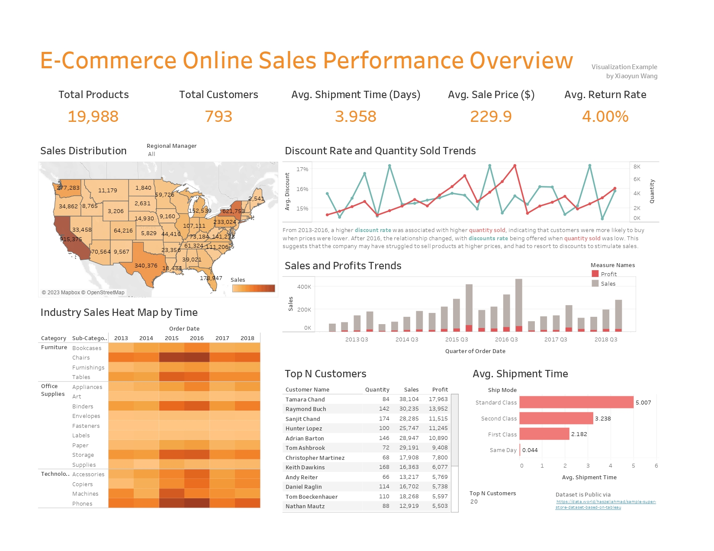

Data Visualization: Tableau Dashboards
As a seasoned analytics professional, I possess extensive expertise in utilizing self-service analytics and data visualization tools, including Tableau. Recently, I conducted a comprehensive analysis of an E-Commerce Online Sales Performance via public dataset, comprising an extensive dataset of over 793 customers and nearly 20,000 products. By leveraging Tableau's capabilities, I identified trends and patterns by plotting the data using diverse visualizations, such as line charts, bar charts, heat maps, and tree maps.
To gain deeper insights, I segmented the data based on geography and item category, identifying top-performing states and industries. Using a heat map, I analyzed industry sales data to determine the highest-performing industries across different geographies, time series, and other dimensions. By also examining trends in discount rates and quantities sold over time, I detected patterns and recommended targeted outreach strategies to drive growth.
Throughout the project, I effectively applied my skills in data analysis, visualization, segmentation, marketing strategy development, and dashboard creation, as well as my proficiency in tools such as Tableau, Excel, and SQL. By presenting key findings and actionable insights, I empowered the client to make informed decisions that will enhance sales and profits in the long run.